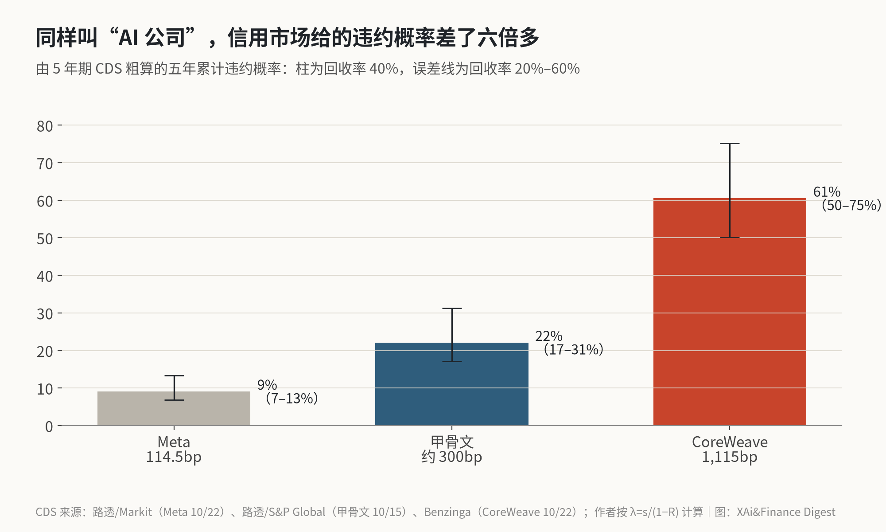
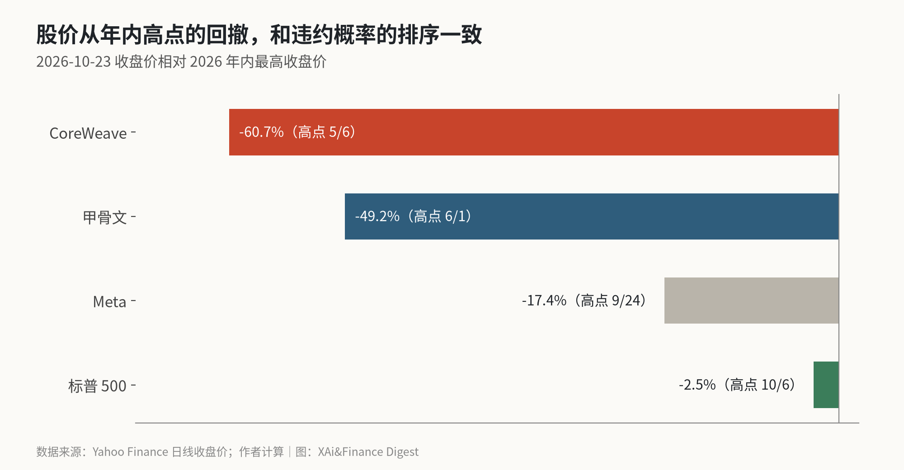

CoreWeave 的违约保险报价 1,115 个基点：换算下来，市场在给它定价五年内约六成的违约概率
这一周 X 上吵的是“AI 是不是泡沫”，信用市场给出的答案更细。我把 Meta、甲骨文和 CoreWeave 的 5 年期 CDS 报价各自换算成违约概率，三家相差六倍多。
过去两周 AI 股的下跌，X 上很多人都会提到同一个词：CDS。日本博主 @Butamaru_Butako 说，最近 AI 股下跌的最大原因，是 AI 公司的 5 年期 CDS 全面飙升，并点名甲骨文和 CoreWeave 更危险；付鹏的说法是“信用市场永远是领先于市场的”。
CDS（信用违约互换）可以理解成给一家公司的债券买的违约保险。报价以基点表示，1,000 个基点就是每年为 1 美元债券付 10 美分保费。保费越贵，市场觉得违约越可能。
我想做的是把这些基点换算成更直观的东西：市场到底在给每家公司定价多大的违约概率。换算完的结论是，信用市场并没有把“AI 公司”当成一个整体。Meta 被定价为五年内违约概率约 9%，甲骨文约 22%，CoreWeave 约 60%。股市还在争论泡沫，债市已经按公司把风险分了层。
三个报价从哪来
CoreWeave 的数字来自 Benzinga 10 月 22 日的报道：5 年期 CDS 报 1,115 个基点，今年以来涨了 171%，近一个月涨了 36%；它那笔 27.5 亿美元、2031 年到期的债券收益率升到 15.76%，创纪录。
Meta 的数字来自路透同日引用的 Markit 数据：5 年期 CDS 升 7.3 个基点，到 114.5 个基点，是有记录以来最高。
甲骨文我只找到 10 月 15 日路透的说法：CDS 接近 300 个基点，那一周涨了约 31 个基点。这是一周多以前的数，我没有更新的报价，就按 300 个基点算。
我是怎么换算的
换算用的是信用分析里最常见的一个粗略公式：年化违约强度约等于 CDS 报价除以（1 减去回收率）。回收率指公司违约后债权人能拿回多少，我先按行业常用的 40% 算，再把五年累计起来。
CoreWeave：11.15% 除以 0.6，约等于每年 18.6% 的违约强度，五年累计约 60.5%。
甲骨文：3% 除以 0.6，每年约 5%，五年累计约 22%。
Meta：1.145% 除以 0.6，每年约 1.9%，五年累计约 9%。

回收率这个假设对结果影响不小，所以图里的误差线把回收率从 20% 拉到 60%。CoreWeave 的区间是 50% 到 75%，怎么调都在一半以上。
这个结果和公开报道的口径对得上。彭博 10 月 15 日报道，CoreWeave 的 CDS 盘中最高到 1,194.5 个基点，对应“五年内超过 60% 的违约概率”；路透给出的口径是，1,000 个基点大约对应五年 64% 的违约风险，一年前还在 30% 左右。几家用的假设不同，量级是一致的。
需要说明的是，这是“风险中性”的概率，里面包含了投资者为承担风险要求的额外补偿，通常会高于真实违约的频率。所以 60% 不是说 CoreWeave 有六成可能会违约，而是说市场现在为它的违约风险开出的价格，相当于六成。
股价的排序和它一致

我顺手把三家公司的股价拉出来对了一下。按 Yahoo Finance 的收盘价，CoreWeave 周五收 54.24 美元，比 5 月 6 日的年内高点跌了 60.7%；甲骨文比 6 月 1 日的高点跌了 49.2%；Meta 比 9 月 24 日的高点跌了 17.4%；标普 500 只比高点低 2.5%。
信用市场觉得越危险的公司，股价跌得越多。这一点不意外，但它说明这轮下跌并不是“所有 AI 股一起被抛”，而是按资产负债表被分了层。
分层的原因也看得到。Meta 的问题是现金流：CNBC 报道，Meta 三季度自由现金流为负 21.2 亿美元，全年资本开支指引的下限从 1,300 亿美元上调到 1,350 亿美元，同时宣布要发行无投票权的 C 类股，用来“为增长融资”。但 Meta 本身还在赚钱，CDS 只有一百多个基点。
CoreWeave 的问题是债务本身。路透引用 LSEG 数据，它欠了将近 500 亿美元；Benzinga 报道，它上半年折旧摊销 25 亿美元，同期收入 46 亿美元，折旧占了收入的一半以上。
德意志银行的 Jim Reid 在路透 10 月 15 日的报道里有一句话，我觉得把这件事讲清楚了：当资本开支从靠自由现金流支撑，转向靠借债支撑时，就必须越来越重视信用市场的价格变化。Meta 还处在前一种状态，CoreWeave 已经完全处在后一种状态，两家 CDS 报价的差距反映的就是这个区别。
多头的说法能不能对上
看多的一方并非没有道理。
Wedbush 的 Dan Ives 在 @APompliano 转发的采访里说，CoreWeave 借的债“相对它的在手订单微不足道”。Benzinga 的数字是，CoreWeave 的收入积压超过 1,040 亿美元，客户包括微软、OpenAI、Anthropic 和 Jane Street。
我拿将近 500 亿美元的债务除以 1,040 亿美元的积压订单，得到约 0.48。也就是说，它的债接近订单总额的一半。这个比例说不上“微不足道”。订单要在几年里逐步变成收入，而债务利息是现在就要付的。
另一种多头逻辑来自 Tom Lee。他在 X 上说，债券市场在限制“充裕的融资”，这种环境下很难形成泡沫；他还说 AI 股的看空仓位已经到了极端，像一根“压紧的弹簧”。这个说法我部分同意：信用利差走阔，本身就在逼借钱最多的公司放慢扩张，泡沫不容易继续吹大。但它解决的是“泡沫会不会更大”，不是“已经借了的钱能不能还上”。
还有一条来自需求端。中文博主 @TJ_Research 转述亚马逊 CEO 的采访：今年资本开支 2,200 亿美元，仍有大量需求无法满足。这是转述，我没有找到原始采访文字，但它和黄仁勋“需求高得离谱”的说法一致。需求强能支撑大厂的现金流，对 CoreWeave 这类靠借钱建机房的公司帮助有限，因为它们缺的是钱，而不是订单。
信用市场分得比股市细
整体而言，信用市场给出的答案比股市更细。它没有在给整个 AI 行业定价泡沫破裂，而是在给借钱最多、现金流最弱的那几家定价违约风险。CoreWeave 的六成，和 Meta 的一成，不应该放在同一个“AI 泡沫”里讨论。
这种分化会不会变成全面重估，要看三处变化。
第一，各家云厂商接下来给出的资本开支指引。CoreWeave 的积压订单来自微软、OpenAI 这些客户，大客户维持或上调开支，这些订单兑现的可能性就更高；如果有人下调，最先被重新定价的会是 CoreWeave 这种高杠杆公司。
第二，CoreWeave 的 CDS 能不能回到 1,000 个基点以下。按路透的口径，1,000 个基点对应五年约 64% 的违约风险。只要报价一直在这个数之上，市场就是在把它当成更可能违约而不是更可能还清的公司来定价。
第三，Meta 的 CDS 会不会继续往甲骨文的方向走。按前文的换算，Meta 现在约 9% 的五年违约概率，说明市场担心的是它“钱花得太快”，而不是“钱不够”。如果它的报价开始逼近 300 个基点，就说明信用市场的担心从高杠杆的小公司蔓延到了现金流充足的大厂。
X 上怎么看
结论 · 多空分歧：5 位看多，6 位看空，1 位中性/分歧。看空的人拿 CDS 当证据，看多的人认为融资收紧本身就在给泡沫降温。
▲ 看多5 位
融资担忧和政治阻力压着 AI 股，但仓位已到看空极端，像一根“压紧的弹簧”。
转述 Dan Ives：CoreWeave 借的债相对它的在手订单“微不足道”；华尔街低估了未来 12–18 个月的盈利。
▼ 看空6 位
● 分歧或中性1 位
观点为 X 用户当日公开帖子的中文摘要，忠于原文但有删减；标「未核实」的为预测、个人推测或单一来源说法。立场为人工判断。
数据来源
- https://www.benzinga.com/markets/bonds/26/10/62541064/coreweave-debt-stress-mounts-bond-yield-hits-record-as-stock-suffers-44-billion-wipeout
- https://www.investing.com/news/economy-news/metas-credit-risk-indicator-jumps-to-record-high-after-results-4966556
- https://www.investing.com/news/stock-market-news/ai-credit-default-swap-spreads-widen-sharply-4950549
- https://news.bloomberglaw.com/bankruptcy-law/coreweave-risk-gauge-hits-record-pricing-60-odds-of-default
- https://www.cnbc.com/2026/10/22/meta-stock-q3-earnings-free-cash-flow.html
- https://x.com/Butamaru_Butako/status/2113423278022983911
- https://x.com/fupenglondon/status/2113443053507887198
- https://x.com/fundstrat/status/2113438034851180723
- https://x.com/fundstrat/status/2113414997011492890
- https://x.com/APompliano/status/2113623915578757240
- https://x.com/TJ_Research/status/2113712917510283768